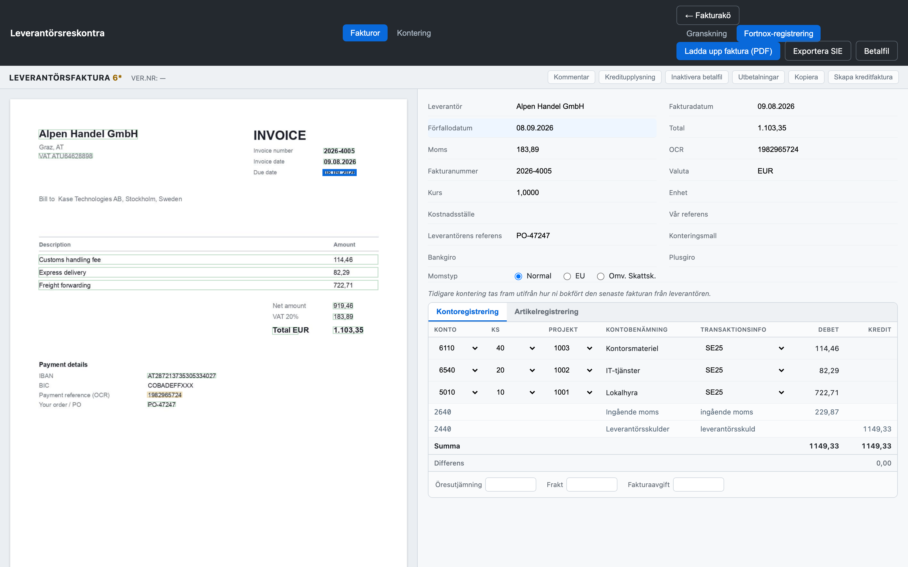

Läser in leverantörsfakturor, låter en människa granska och attestera,
konterar mot BAS med korrekt moms och dimensioner — och lämnar ut bokförings- och
betalningsunderlag enligt svensk standard.
Programvaran föreslår — människan beslutar. Inget bokförs eller betalas utan attest.
Fortnox-registrering

Fortnox-vyn — fakturan tolkas till vänster, kontering (konto · KS · projekt) till höger.
Flöde
1
Inläsning
PDF tolkas automatiskt med Claude vision — varje värde markeras som en ruta på fakturan.
2
Granskning
Människan bekräftar eller rättar. Strukturkontroller på moms-nr, IBAN och OCR.
3
Kontering
BAS-konto, momskod och dimensioner (KS, projekt). Verifikatet byggs live och balanserar.
4
Attest
Granskare → attestant. Fyra ögon och beloppsgräns innan något släpps vidare.
5
Bokför & betala
SIE4-export till bokföringen och ISO 20022 pain.001-betalfil till banken.
Svensk redovisning
BAS-kontoplan — kontering mot standardkonton
Moms — 25/12/6 % samt omvänd skattskyldighet
Dimensioner — kostnadsställe (SIE-dim 1) och projekt (dim 6)
SIE4-export — PC8-kodad, importeras i Fortnox/Visma m.fl.
Betalfil — ISO 20022 pain.001 med IBAN samt bankgiro/plusgiro